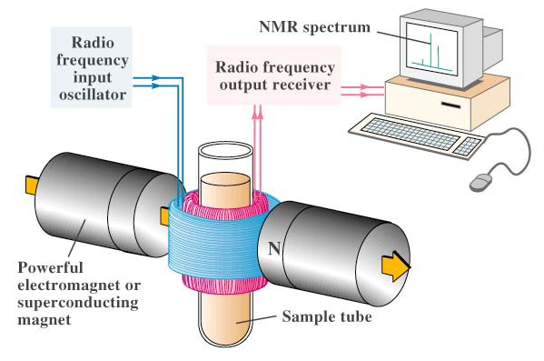
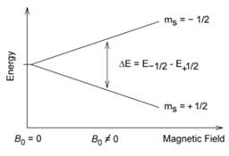
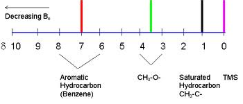

Nuclear Magnetic Resonance (NMR) spectroscopy is one of the powerful analytical techniques used in determining the structure of organic compounds. Isotopes of 1H, 13C, 19F, and 31P have I = 0.5 and are of great interest. 1H NMR or the proton NMR is the technique in which the hydrogen nuclei of the compound/substance are studied in order to determine the structure of the compound under study. The two most important characteristics of NMR spectra are the chemical shift and the coupling constant. This experiment deals with virtually recording the proton NMR spectra for a set of samples and analyzing them.
Nuclei with odd atomic (number of protons) or mass number (total number of protons and neutrons) or both have quantized spin angular momentum and a magnetic moment. Interaction of the magnetic moment of an atomic nucleus (µ) with an external magnetic field results in the absorption of energy and changes their spin orientation with respect to the external field. NMR gives the chemical properties of molecules by studying the magnetic properties of the atomic nuclei, which is measured by resonant absorption by nuclei.

The nuclear spin energy levels in an external magnetic field B0.
Chemical Shift:
Nuclei in a different chemical environment experience different magnetic fields. The electron cloud around the nuclei induces electronic angular momentum, which gives rise to an additional magnetic field ß, which is given as:
δß = -σß0
Where 'σ' is the shield constant, the electrons around the nucleus shield the nuclei from an effective magnetic field and require lower frequency energy to cause resonance. Therefore different nuclei in the same compound come into resonance at different frequencies. In general, hydrogens bound to carbons attached to electron-withdrawing groups tend to resonate at higher frequencies. The position where a particular hydrogen atom resonates relative to TMS is called its chemical shift.
δ = Observed chemical shift (Hz) x 106/Spectrometer frequency (Hz) (parts per million)
The peak value of TMS is assigned as d = 0.00.
Solvent and internal standard:
Tetramethylsilane is used as an internal standard during the NMR measurements for the following reasons:
1.Is inert, non-toxic, low boiling point, and can be recovered by distillation
2.Very small amount is required for measurement
3.Has 12 equivalent protons and thus give a single strong peak
4.The signal appears outside (more upfield) away from most of the protons signals
When using the modern NMR instruments, no internal standard is added to the sample to be measure. The difference between the solvent signal and the TMS is known. The modern instruments detect the solvent signal and lock them, which now can serve as the internal standard.

To record an NMR spectrum of a particular sample, it is required to dissolve the sample in a solvent. To avoid the sample signals, one needs to use deuterated solvent. For non-polar to moderately polar compounds, deuterated chloroform is commonly used. For polar compounds, deuterated Dimethyl sulfoxide (DMSO) is commonly used. Any traces of impurity in the solvents used are detected at CHCl3 : 7.25 ppm and DMSO : 2.5 ppm
NMR Spectra:
An NMR spectrum gives various information of the compound that it helps in the structural elucidation of the organic molecule;
• The number of signals gives the number of different sets of protons present in the sample measured.
• Chemical shift gives the environment of the protons
• Multiplicity gives information on the number of protons on adjacent atoms
• Integration of the peaks (peak area) gives the number of protons in each environment